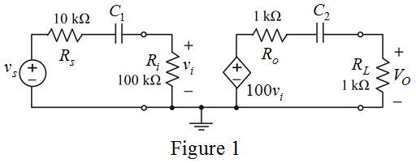

Consider the circuit diagram.

Calculate the corner frequency at the input side of the circuit.
Consider the input capacitance in the form .
Determine the corner frequency at the input frequency.
Determine the frequency at the output side of the circuit.
Therefore, the output capacitance in the form .
Determine the corner frequency at the output frequency.
Simplify the expression further,
Therefore, the transfer function is,
.